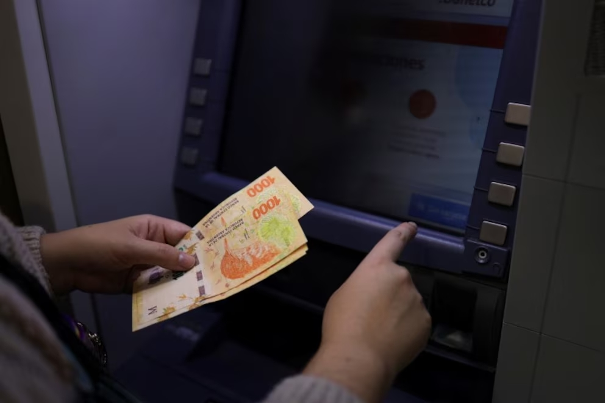
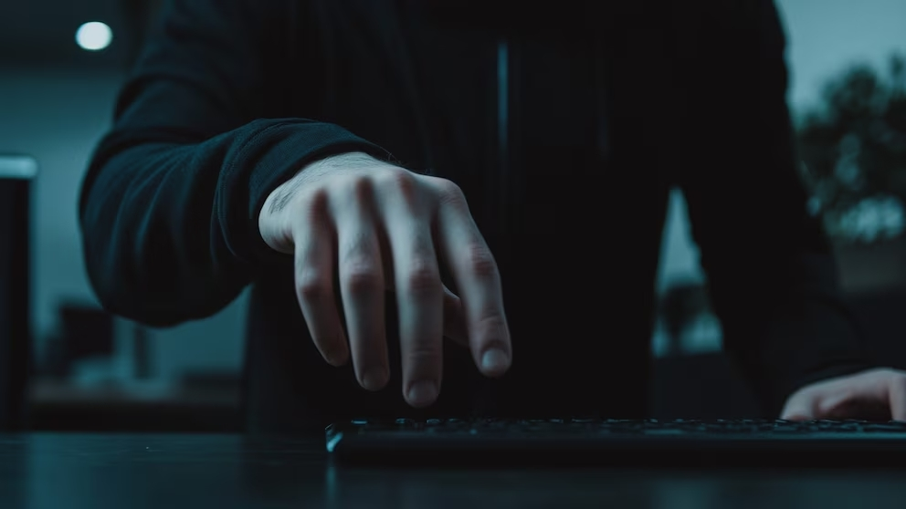
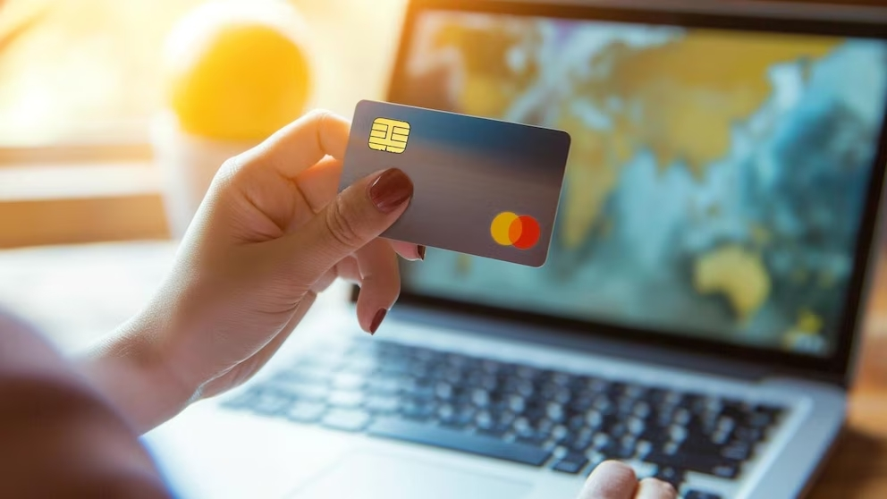
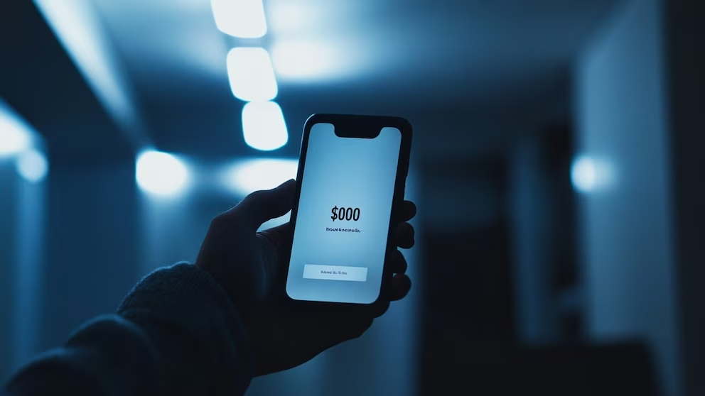

Evita estafas al retirar dinero de un cajero con este botón al finalizar cada transacción
Aunque el usuario no esté consciente de ello, algunos cajeros automáticos no están configurados para cerrar la sesión de forma inmediata tras la extracción de dinero.

Es mejor tomarse unos segundos para reducir riesgos financieros. (Foto: REUTERS/Cristina Sille)
Si la sesión permanece abierta, el cajero podría mostrar en pantalla información bancaria que debió haber sido eliminada, como el saldo de la cuenta o el último movimiento.
En escenarios más comprometidos, una persona malintencionada podría aprovechar esa ventana de tiempo para realizar una segunda operación, como un retiro adicional o una transferencia, si el sistema lo permite.
Qué otras medidas de seguridad se deben implementar al retirar dinero

Delincuentes están esperando cualquier descuido para acceder a tu información bancaria.
Para evitar problemas, siempre supervisa los movimientos realizados en el cajero y asegúrate de que la sesión se haya cerrado correctamente. Además, cubre el teclado mientras introduces tu PIN para evitar miradas indiscretas.
Cuáles peligros hay si no se cancela la sesión y alguien más accede al cajero

Hay que supervisar cualquier movimiento sospechoso para evitar fraudes.
Si no se cancela la sesión, existe el riesgo de que otra persona pueda acceder a tu cuenta y realizar operaciones no autorizadas, como retiros adicionales o transferencias a cuentas externas.
Por qué es clave pulsar el botón de ‘cancelar’ tras usar un cajero

Esta práctica debe ir acompañada de otras medidas de seguridad para proteger tus finanzas.
Pulsar el botón de ‘cancelar’ asegura que la sesión se cierre completamente y que no quede información sensible en pantalla. Es un paso simple pero crucial para evitar estafas y proteger tus datos personales.